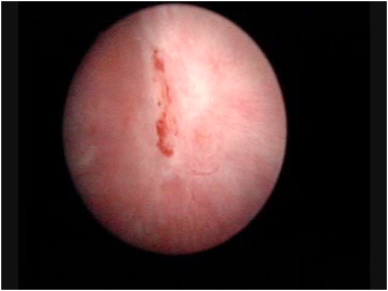
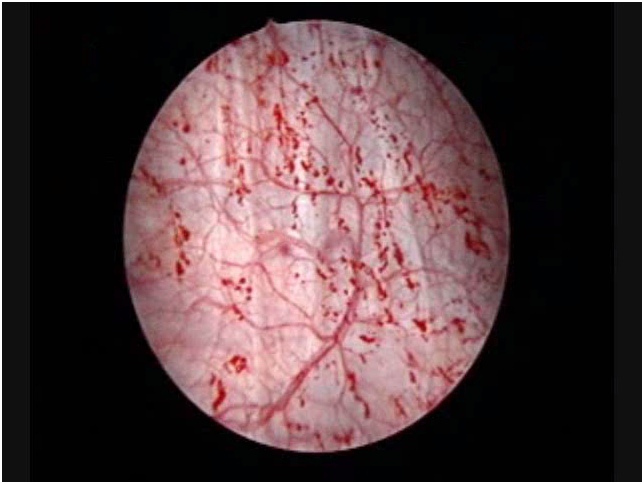

INTESTITIAL CYSTITIS (C.I)
(From the guidelines of the European Society of Urology)
Interstitial Cystitis (or as defined by the International Continence Society: Painful Bladder Syndrome), evokes unfortunately doomsday scenarios, strengthened by countless testimonies of patients who are afflicted. Fortunately,
most patients who fear of being sick of IC are usually suffering from chronic cystitis or Chronic Pain Syndrome of the Pelvic Floor (CPPS).
DEFINITION
The definition of interstitial cystitis–I.C. or PBS (bladder Pain syndrome = painful bladder Syndrome) is as follows: Presence of pelvic pain related to the bladder, which exacerbates with the filling, accompanied by urgency and increased frequency of urination, day and night tasting for more than six months and is not associated with urinary infections (NeurourolUrodyn. 2009; 28 (4): 274-86).
The statistical incidence of this disease varies widely in the literature from article to article. This depends on the fact that many researches, especially in the past, have taken account, in order to make the diagnosis, only by the symptoms complained by the patient, without standardized clinical trials required today (see below). Also, and this is very important to point out, these statistics vary from country to country. In fact, there are countries where high incidences of the disease may depend on specific environmental factors, as for example in Finland where a research of 2005 (J Urol 2005; 174.2: 581-583) showed the presence of 530/100,000 patients with I.C.
For the Italian population are more applicable the statistics registered in Austria in 2007 (EurUrol; 2007; 51.3: 803-808) documenting the disease’s incidence in 306/100,000 with top percentages of 464/100,000 in women of average age. The disease affects almost exclusively women with a predominance of man of 10: 1 and with a preference for those of Caucasian race (the European).
DIAGNOSIS
(American Urological Association guidelines)
Principles of basic diagnosis:
History, physical examination, laboratory tests to rule out other similar diseases, see below.
Cystoscopy and urodynamic examination are useless in cases where the type of symptoms is striking, according to the expert opinion of the American Urologic Association. These two investigations remain appropriate when, after basic assessments, diagnosis is in doubt. The potassium sensitivity test should not be used in the base clinic because its outcome may change both the direction and the approach to clinical treatment.
AUTOMATIC INCLUSION CRITERIA:
-
 Hunner’s ulcer (present in less than 10% of patients) appeared at hydro stretching.
INCLUSION CRITERIA:
-
The filling bladder pain abates with emptying (reason for voiding frequency).
-
Pain (suprapubic, Urethral, vaginal pelvic or perineal area).
-
 Glomerulation (appearance of haemorrhagicpetechia) during the hydrodistension (90% of patients).
-
Poor tolerance of hydrodistension.
The characteristics of the pain of the I.C. are the key symptom of disease:
-
It is correlated with the degree of bladder distention.
-
It is located in the suprapubic area with possible irradiation to the crotches, the vagina, the rectum or sacrum.
-
It decreases with bladder emptying but returns soon after.
EXCLUSION CRITERIA:
-
Age under the 18 years
-
Malignant or benign neoplasms of bladder
-
Uterine, cervical, vaginal or urethral neoplasia
-
Post radiation cystitis
-
Tuberculosis cystitis
-
Active bacterial cystitis
-
Concomitant bacterial or fungal vaginitis
-
Cystitis from cyclophosphamide
-
Symptomatic urethral diverticulum
-
Active genital herpes
-
Bladder or urethral stones
-
Daytime voiding frequency inferior to 5 times in 12 hours
-
Nocturnal voiding frequency lower than 2 times
-
Improvement or disappearance of symptoms with antibiotics, urinary antiseptics, analgesics
-
Less than 12 months duration
-
Presence of overactive bladder (urodynamic examination)
-
Greaterbladder capacity of 400 cc. in the absence of urgency.
Therefore the diagnosis of interstitial cystitis becomes very probative (Otten; Urology 2005; 66 (3): 494-99) with:
-
Cystoscopy with a hydrodistension for 1-3 minutes with 100 cc. of water.
-
Appearance of haemorrhagic petechiae in at least 3 bladder quadrants.
-
At least 10 petechiae to quadrant.
We have to remember that the appearance of glomerulations (petechiae), it is variable and its absence may lead erroneously to exclude the diagnosis of I.C.
Also note that we can detect the glomerulations in irradiated or denerved bladders, in bladder cancer, during the chemotherapy exposure and also, even if rarely, in normal bladders.
However, there are other signs of confidence, such as:
-
Presence during urodynamic examination of reduced bladder capacity, with urgency that appears less than 150cc of distension.
-
Pain in the instillation with potassium solution (in 75% of patients). Lately it has been suggested that this positive test is predictive for responding positively to treatment with GAGs (Gupta; BJU Int 2005; 96 (7): 1063-66).
-
Bladder biopsy in the guidelines of the EAU is not pathognomonic, but it is considered to support the diagnosis if the presence of mast cells is highlighted. (Nordling; EUR Urol 2004; 45 (5): 662-69).
PATHOGENESIS
There are many different hypotheses about the causes of the I.C..
1)Infections: despite the use of sophisticated research of bacteria (including Helicobacter Pilorii) or viruses, pathogenic microorganisms have never been found.
2)Inflammation: is considered an essential part of the disease, associated with pan cystitis and perineural infiltrates of lymphocytes and plasma cells. However, it is probably an effect, not a cause.
3)Activation of Mast Cells: we have to remember that the mast cells are strongly proinflammatory factors containing immune cells as histamine, serotonin and cytokines. In bladder biopsies, as mentioned above, it can be an increase of 10 times of mast cells (Peeker; J Urol 2000; 163 (3): 1009-15).
4)Endothelial dysfunction with lack of GAGs: all patients with I.C. have endothelium fragility or injury that occurs with fissures or breakage of the endothelium during hydro stretching and subsequent onset of petechiae. The increase in the level of GAG sulfates in patients with severe symptoms is considered by some as a marker for monitoring the evolution of the disease (Lokeshwar; J Urol 2005; 174 (1): 344-49).
5)Alteration of Autoimmunity: since 1970 there have been multiple studies on autoantibody in I.C. The results are still inconclusive.
6)Alteration of metabolism of nitric oxide: also in this case the results were inconclusive, although the level of evaporation of nitric oxide in urine of patients with I.C. is significantly higher than in control groups (Logadottir; J Urol 2004; 171 (3): 1148-50).
7)Neurobiologicalhypotheses: in patients with I.C. it detects an increase in sympathetic innervation with increase of neurotransmitters. Therefore, it is assumed by many researchers that this is the start to the event’s cascade that leads to full-blown disease.
8)Toxicsubstances: the presence of acidic or aggressive substances in the urine, in the presence of endothelium lability can probably trigger a mucosal defenses fall.
9)Hypoxia: it has been observed that there is a decrease in the density of capillaries in subendothelium in the presence of I.C. This hypo vascularization could lead to a decrease in oxygenation of the wall. According to this hypothesis, in fact, sessions of hyperbaric therapy have obtained the remission of the disease (Vw; J Urol 1999; 162 (2): 330-34).
11)Increased NGF (Nervous Growth Factor): in a recent research (Evans and Moldwin;J of Urol. 2011) has been proven as in I.C. there is an increase of the NGF in urine and in the interstitium that participates in inflammatory conditions, generating and maintaining the pain. And it was also able to demonstrate (see new treatments) as the block of NGF, reduces the symptoms of overactive bladder, one of the consequences of the I.C.
10)Interaction of multiple factors: is the current hypothesis, that sees as a cause the multiple interactions between the immune system, nervous and endocrine system.
THERAPY
According to the recommendations of the American Urologic Association, there are six therapeutic levels
The first level is based on:
-
Principles of clinical education (knowledge of the anatomy and physiology of urinary bladder, explanation of the disease and its treatment options)
-
Principles of “auto welfare” (change of behaviors that may trigger the symptoms, management of the stress that exacerbate the noise)
The second level is based on:
-
Manual physical therapy with maneuvers that solve the pelvic pain, the abdominal and/or release the trigger points (avoid the stretching exercises and run the maneuvers to specialists specifically instructed).
-
Oral therapy (in alphabetic and not for efficacy order) with Amitriptyline, Cimetidine, Pilocarpine (Atarax), Pentosan Polysulfato .
-
Intravesical instillation therapy (in alphabetical order) with Heparin, Hyaluronic acid and Chondroitin sulphate(Ialuril), Lidocaine.
The third level is based on:
-
Cystoscopy + hydro distension (with general anaesthesia, with low pressure and short duration).
-
Laser or electrocution or cortisone infiltrations in the presence of Hunner’s ulcers.
The fourth level is based on:
-
Neurostimulation with permanent implant if temporary implant has been successful when the previous therapies were unsuccessful.
The fifth level is based on:
-
Oral administration of Cyclosporine.
-
Intra detrusorial botulin A toxin infiltration (with the possibility of bladder paralysis and consequent intermittent catheterizations).
The sixth level is based on:
-
Bladder surgery with bladder replacement or cystoplastic or urinary diversion with or without cystectomy (only in very selected patients and when any other therapy has been unsuccessful in controlling symptoms and maintaining a sustainable minimum quality of life).
EXPERIMENTAL TREATMENT OUTSIDE OF THE AMERICAN UROLOGYC ASSOCIATION GUIDELINES
(Evans et al.: J of Urol. ol. 185: 1551-52, May 2011).
As already pointed out, it has been shown that Nerve Growth Factor (NGF) attends directly to inflammation of the bladder wall and generates and maintains the chronic pain. Also in animals suffering from interstitial cystitis and urinary excretion levels of NGF, block of such factor, immediately reduces its hyperactivity. Starting from these premises, Evans led in 2011 a randomized double-blind trial, by administering to patients with I.C. the TAMEZUMAB which is a monoclonal antibody anti-NGF. The study’s findings were that the Tamezumab was very effective in the treatment of painful symptoms but did not reduce the urinary frequency, nor increased the amount of voided urine for each urination.
-
THERAPEUTIC BEHAVIOUR TO BE AVOIDED:
-
Prolonged administration of antibiotics
-
Prolonged administration of cortisone
-
Treatment with intravesical instillation of Bacillus Calmette-Guerin
-
Intravesical instillation of Resiniferatoxin
-
High pressure or a long time hydro distension (more than 10 minutes)
In conclusion:
-
We have to begin with the more conservative treatments and reserve surgery to more resistant situations or in the presence of Hunner’s ulcers.
-
The initial level of treatment depends on the judgement of the physician, the severity of symptoms and the patient’s wishes.
-
Multiple treatments may be taken in consideration as this is in the patient’s interest.
-
Ineffective treatments must be suspended before moving on to a different level of therapy.
-
Pain management should be the primary goal of each treatment.
- In the absence of results we must always be ready to reconsider the diagnosis.
Back to: Female Cystitis